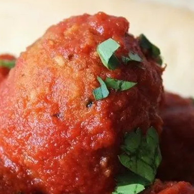

Rice Balls a la Tim
Description
My father LOVES these--so I name them after him. I make these softball sized as a main course for a quick, filling dinner. Serve with a side of sauce and garlic bread.
Ingredients
- 1 cup uncooked white rice
- 2 cups water
- 2 teaspoons olive oil
- 3 cloves garlic, finely chopped
- ½ pound lean ground beef
- salt and pepper to taste
- ½ cup tomato-based pasta sauce
- ½ cup grated Parmesan cheese
- ½ cup shredded mozzarella cheese
- 2 eggs, beaten
- 1 cup dry bread crumbs
- 1 ½ cups tomato-based pasta sauce
Steps
- Bring the rice and water to a boil in a saucepan over high heat. Reduce heat to medium-low, cover, and simmer until the rice is tender and the liquid has been absorbed, 20 to 25 minutes.
- Heat olive oil in a skillet over medium heat, and cook and stir the garlic until fragrant and soft, about 3 minutes. Stir in the ground beef. Cook and stir the meat, breaking it into crumbles as it cooks, until browned and the meat is no longer pink inside, about 10 minutes. Drain off excess grease.
- Place hot cooked rice, ground beef, salt and pepper, and 1/2 cup of pasta sauce in a bowl, and mix thoroughly together. Mix in the Parmesan and mozzarella cheese until mozzarella cheese melts. Scoop up handfuls of rice mixture, and gently form into 2 1/2-inch balls. Place balls on a baking sheet, and refrigerate until cool and firm, about 20 minutes.
- Preheat oven to 350 degrees F (175 degrees C).
- Remove the rice balls from the refrigerator, and roll each in beaten egg and then bread crumbs to thoroughly coat. Return to baking sheet, and bake until the outside of the rice balls is crispy, about 25 minutes. Heat 1 1/2 cups of pasta sauce in a saucepan over medium heat, and cover rice balls with heated sauce to serve.